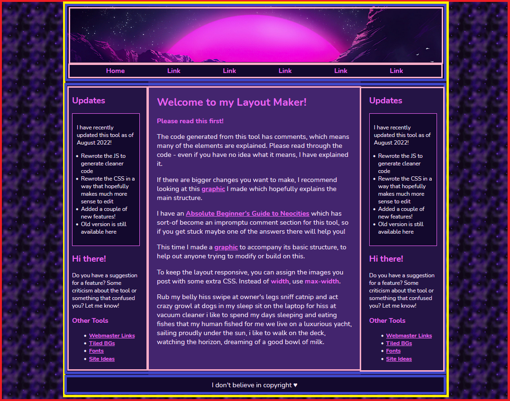
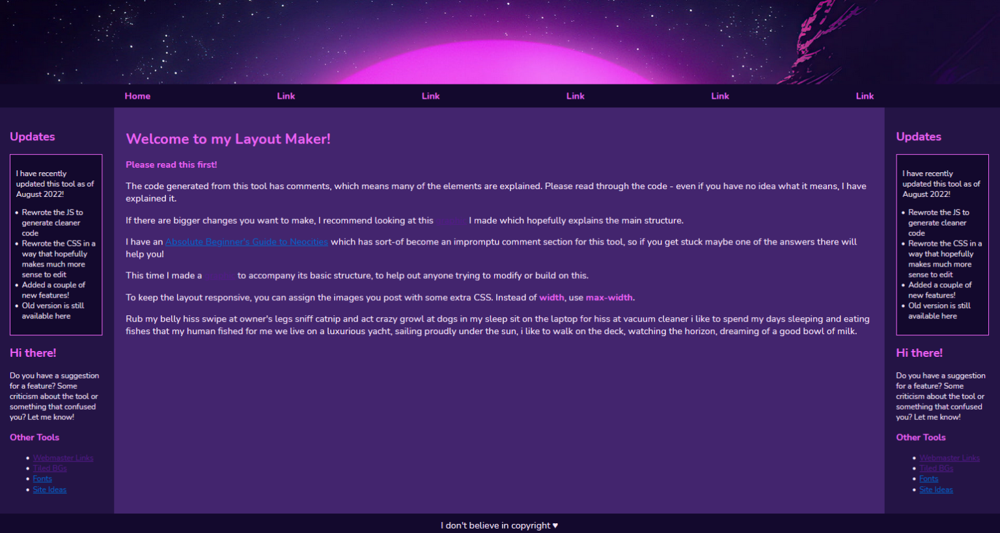
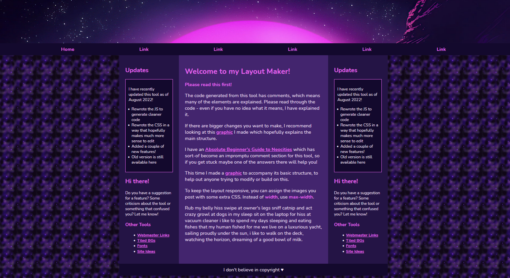
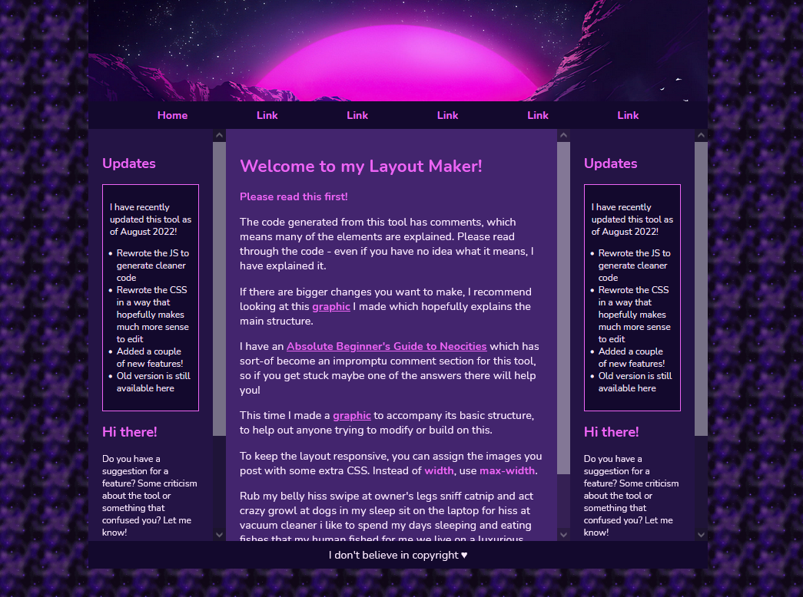

Understanding and tweaking my layout maker
Many people who find and use my layout builder tool like to build upon the base layout, which is exactly what I like to see!
This post is intended to explain the basic structure and show various examples of how you can change it up.
As I continue to get questions, I will hopefully have the time to continue to update this post with specific solutions to specific problems.
HTML visualization

The basic structure which makes up any website is HTML. I want to focus on how the different pieces are put together because I feel like understanding this really opens up a lot of possibilities in terms of customization.
This layout uses a variety of divs to construct what you see above. The “main” divs are outlined in colors. Each “layer” of divs has a different color.
The below sections pertain to this image, so feel free to open it in a new window to view it along with the text.
The body
The outermost box (in red) is our body.
If we do not have <body></body> tags on our page and you use the code provided by the maker, you might not see this area or it’ll be blank. That’s because it doesn’t exist – and you can fix it by adding a <body> tag right under your </head> tag, and a closing </body> tag at the end of your page, before </html>. (On CodePen, Pens automatically have a body, which is why it works there even without these tags.)
The container
The container is outlined in yellow in the graphic.
Don’t let the word ‘container’ throw you off. It doesn’t really mean anything officially, it’s just something webmasters like to call a div that holds other divs. Since this is the main div inside of our body that holds our header, nav, etc. I have dubbed it with the ID of “container”.
Inside of the container is… pretty much the entire layout! But directly inside of the container is three divs I outlined in blue. Some of these containers have other things inside of them – outlined in pink. Layouts are just divs organized in a certain order, like building blocks kind of.
The main divs
Outlined in blue are three divs, three sections. From top to bottom: #headerArea, #flex, and #footer.
- #headerArea - This is a box which contains the items outlined in pink: your #header div and your #navbar element. (If you selected the #topBar option in the maker, this is in there there as well).
- #flex - This div is where we apply the flex style to, which allows us to have two or more divs side-by-side (our content and sidebars). Inside of here is your #leftSidebar, #main content area and #rightSidebar.
- #footer - This one’s pretty basic, and it’s your footer. Nothing much to see here, no other divs inside of it (but you can create some if you’d like!)
Layout width
Being able to visualize the basic structure of the layout allows us to understand something important about the width.
All of the boxes inside of #container are constrained TO the container’s width. If the CSS #container did not include a width, they would fill the full area of the screen.
I can demonstrate this in two ways.
First, in this example I completely removed the #container div.
Be careful when you do this. Each opening HTML tag has its own closing tag. Sometimes it’s easy to get lost in a sea of </div> tags, not knowing which belongs to which.
Most code editors (including on Neocities) have little triangles among the line numbers on the left. You can collapse a complete tag if it can find the start and the end tag. This can be useful for finding the location of a particular end tag if you aren’t sure.
[Image]
Here’s a screenshot of how it looks with no container to constrain the width:

As a result of having nothing to contain it, the layout stretches to fill the entire body. This isn’t really considered ideal, since it will look strange to people on larger monitors.
You can play with a live CodePen of this here.
Alternately... you can take some things out of the container if you want them to be the only things that stretch. In this example, I took the entire #headerArea div (and everything inside of it) and moved it outside of the container.

You can play with a live CodePen of this here.
Remaining responsive
In order for the layout to remain responsive on mobile, it’s important to know how to adjust the container size and the media query. The media query is dependent on the container size. Even if you’ve never seen a media query in your life, hopefully my instructions can guide you through.
Currently in my demo, the max-width of the container is 900px.
Let’s say I wanted to increase that to 1100px because I want it to look wider.
- Go into the CSS and find the #container element and change max-width: to 1100px;
- Scroll down to the very bottom where you see the media query begin.
- Subtract 100 from your max-width (1000).
- Change the max-width for #container to this new number.
I tested it with a couple different widths, and this should work! If you forget to change the media query, it will just look a little funky on mobile.
You can play with a live CodePen of this here.
Adding scrollbars to areas
An element with a height: and overflow:auto; will display a scrollbar if there's enough text inside.
On the layout maker, the height of the sidebars aren’t fixed. They will grow as long as the stuff you put inside of it. You can “fix” them by applying a height value.
In order for things to look right, your main content area will need to share the same height as the sidebars. If you know advanced CSS you could probably work something else out but imo, it’s not worth the stress.
By default, both of the sidebars are styled with the aside selector.
To clarify, the below code (height may vary) should be applied to aside and #main.
aside, #main {
height:600px;
overflow:auto;
}After adding that code, here is how the layout looks:

You can play with a live CodePen of this here.